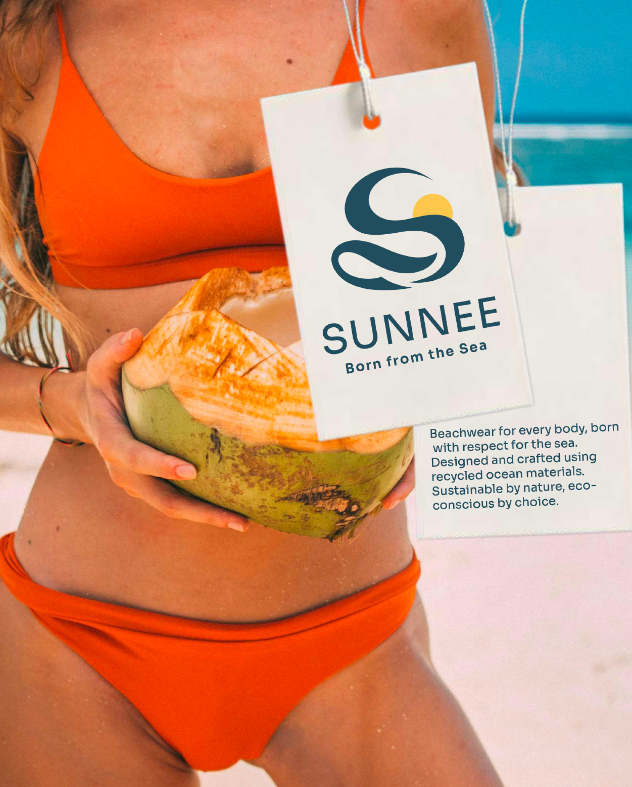
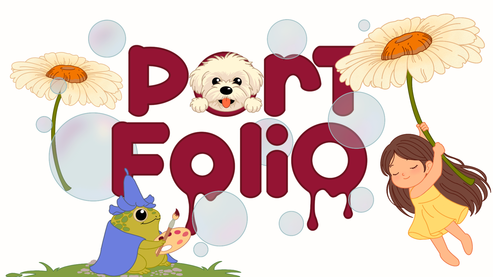
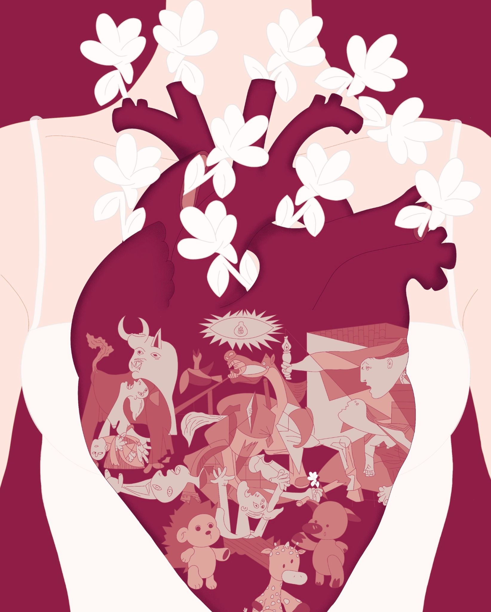
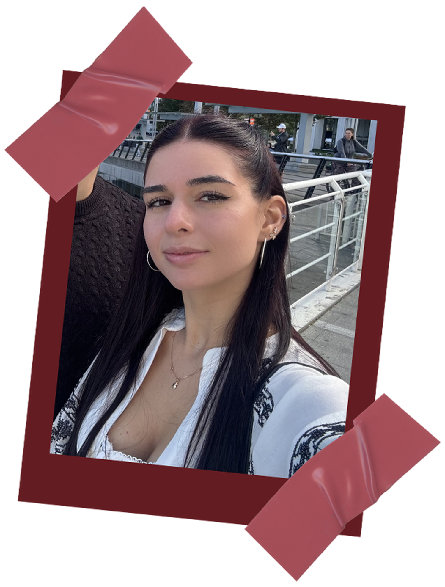

Graphic design e UX/UI
Dall’identità di un brand alla progettazione di un’interfaccia: una selezione di progetti in cui unisco ricerca, creatività e attenzione ai dettagli.
Scopri i progetti
Creo identità visive, interfacce e illustrazioni per dare forma alle idee e raccontarle attraverso le immagini.

Dall’identità di un brand alla progettazione di un’interfaccia: una selezione di progetti in cui unisco ricerca, creatività e attenzione ai dettagli.
Scopri i progetti
Personaggi, mondi immaginari e composizioni digitali. Uno spazio dedicato alla sperimentazione e al racconto visivo.
Guarda le illustrazioniMi chiamo Sara, sono una graphic designer e illustratrice freelance. Mi occupo di identità visiva, illustrazione e progettazione di interfacce digitali.
Ho sempre avuto una grande passione per il design e l’illustrazione, perché mi permettono di sperimentare e creare soluzioni visive capaci di raccontare e trasmettere qualcosa.
Sono una persona creativa, organizzata e curiosa con tanta voglia di mettermi in gioco. Ogni nuovo progetto è per me un’occasione per esprimermi e continuare a imparare cose nuove.
Scopri il mio CV